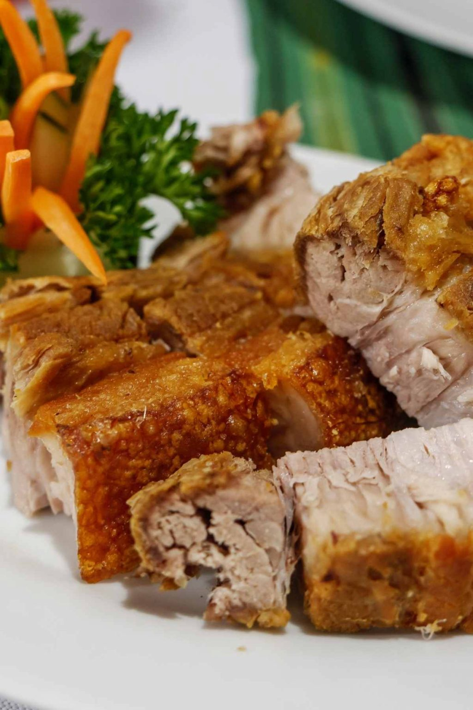

Lechon

Lechon is pork dish that is really popular in the Philippines. Its main characteristics
are the crunchy skin and the tender juicy meat. Mix it with a little sauce on the side
and you'll never stop eating it.
Ingredients:
- Pork Belly
- Olive Oil
- Garlic
- Salt
- Ground Black Pepper
- White Vinegar
Steps:
- In a small bowl, whisk together the oil, garlic, salt, vinegar, and black pepper.
- Place the pork belly on a cutting board skin-side down. Use a sharp knife to score the flesh diagonally about every 2-inches, and then repeat in the opposite direction to create a diamond pattern. Spread the garlic mixture all over the flesh.
- Roll the pork into a cylinder shape and tie it tightly with butcher twine at one-inch intervals.
- Preheat the grill. Once hot, place the pork belly on the grill and secure it so it doesn’t slide off.
- Cover, and cook the pork over medium heat until an instant-read thermometer inserted into the thickest part of the pork reaches 160°F and the skin is dark and crisp. This will take approximately 3 hours.
- When the pork is done, remove it from the grill and let it rest for 10 minutes before removing it from the grill. Slice and serve with your favorite sides.
Return to top